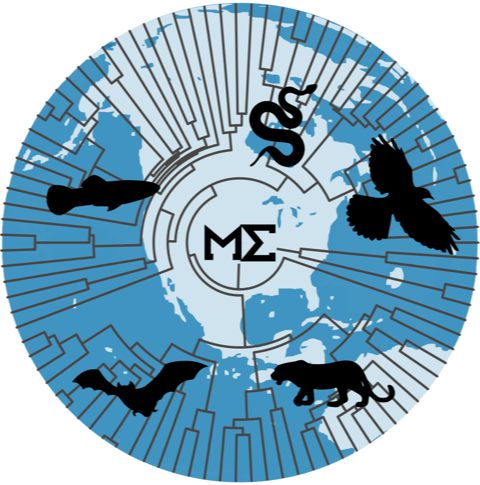
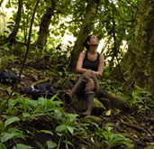
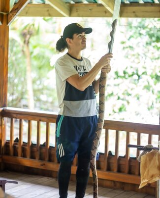
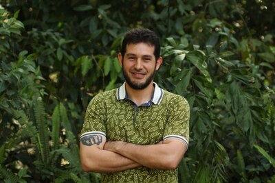
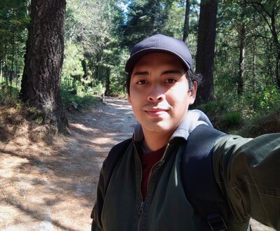
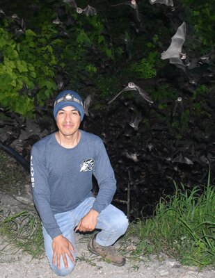
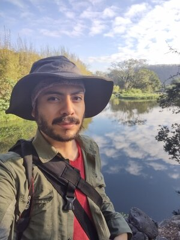
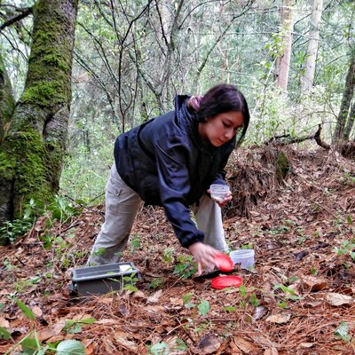

Welcome to the Evolutionary Macroecology Lab
Our lab focuses on the intersection between macroecology and macroevolution, considering macroecological patterns under an evolutionary perspective and evolutionary patterns and processes in a spatial context. We are based at the Evolutionary Biology Network of Instituto de Ecología A.C. - INECOL, Mexico. We are also part of the Ecology & Evolution Graduate Program of the Universidade Federal de Goiás (UFG), Brazil. We support the PEEER initiative for a #BetterPublishing system.

Macroecology · Macroevolution · Biogeography
We integrate macroecological theory and methods with phylogenetic approaches to understand the geographic patterns of biodiversity and the causes that originate, maintain, and alter them.
Research
Our research interests span macroecology, macroevolution, biogeography, community ecology, ecophylogenetics, and conservation biology. We work primarily with vertebrates, but also with insects and plants.
- Macroecology
- Biogeography
- Macroevolution
- Conservation Biogeography
- Spatial Statistics
- Phylogenetic Comparative Methods
Projects
(Evolutionary) Macroecology
Macroecological patterns under an evolutionary perspective, integrating ecology, biogeography, and phylogenetics. Read more →
Macroevolution
Evolutionary processes of speciation, extinction, and dispersal shaping diversity at global scales. Read more →
Conservation Biogeography
Macroecological analyses applied to conservation planning and identification of knowledge gaps. Read more →
Macroecology of Interactions
Ecological networks and their variation across geographic and climatic gradients. Read more →
Recent Publications
The latitudinal speciation gradient in freshwater fishes
Juliana Herrera-Pérez et al. — PLoS One (2026)Payment-based open access is biasing scientific participation from the Global South in ecology
P. Y. Huais, Fabricio Villalobos et al. — Oikos (2026)Advances in the Biogeography of Neotropical Mammals
Luis D. Verde Arregoitia, Fabricio Villalobos — Mammals of Middle and South America. Springer (2026)Evolutionary Responses to Climate Change
Fabricio Villalobos et al. — Encyclopedia of Evolutionary Biology, 2nd ed. (2026)Prevalence and patterns of convergent ecomorphological evolution in rodents
Luis D. Verde Arregoitia, Fabricio Villalobos et al. — Biological Journal of the Linnean Society (2025)
Our Team
 Luis D. Verde Arregoitia
Luis D. Verde Arregoitia
 Gabriel Moulatlet
Gabriel Moulatlet

Carmen Galán Acedo Jessica Falcão
Jessica Falcão
 Alejandro Sánchez
Alejandro Sánchez

Carlos Marín
Daniel Valencia Diana M. Ochoa-Sanz
Diana M. Ochoa-Sanz
 Gerardo Dirzo
Gerardo Dirzo
 Juliana Herrera
Juliana Herrera

Kevin López Reyes
Martin Cabrera
Roberto Ruiz
Monserrat Juárez
Carretera Antigua a Coatepec 351, Xalapa, Veracruz 91073
Campus 1, Edificio C, Tercer Piso
+52 228 8141800 ext. 3019 & 3020